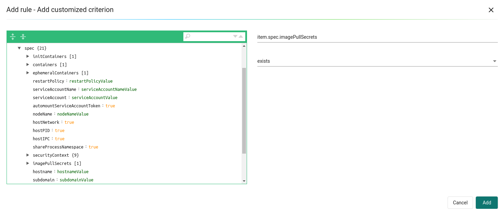

Zulassungskontrolle
Steuerung von Bild- / Container-Implementierungen
Mit der Integration der Zulassungskontrolle in Orchestrierungsplattformen wie Kubernetes und OpenShift spielt SUSE® Security eine wichtige Rolle innerhalb der Bereitstellungspipeline der Orchestrierungsplattform. Immer wenn eine Clusterressource wie Implementierung erstellt wird, wird die Anfrage vom Cluster-APIServer an einen der SUSE® Security Controller weitergeleitet, um zu bestimmen, ob die Implementierung basierend auf den benutzerdefinierten Zulassungsregeln erlaubt oder verweigert werden soll, bevor die Clusterressource erstellt wird. Die von SUSE® Security getroffene Richtlinienentscheidung wird an den Cluster-APIServer zur Durchsetzung zurückgegeben.
Dieses Feature wird in Kubernetes 1.9+ und OpenShift 3.9+ unterstützt. Bevor Sie die Funktion der Zulassungskontrolle in SUSE® Security verwenden, ist es zwar möglich, die Zulassungskontrolle über das --admission-control Argument, das an den Cluster-APIServer übergeben wird, einzurichten, es wird jedoch empfohlen, die dynamische Zulassungskontrolle zu verwenden. Bitte sehen Sie sich die Abschnitte zu Kubernetes und OpenShift unten für die Konfiguration an.
Kubernetes
Die ValidatingAdmissionWebhook- und MutatingAdmissionWebhook-Plugins sind standardmäßig aktiviert.
Überprüfen Sie, ob admissionregistration.kubernetes.io/v1beta1 aktiviert ist
kubectl api-versions | grep admissionregistration
admissionregistration.k8s.io/v1beta1OpenShift
Die ValidatingAdmissionWebhook- und MutatingAdmissionWebhook-Plugins sind standardmäßig NICHT aktiviert. Bitte sehen Sie sich die Beispiele in den OpenShift-Bereitstellungsabschnitten für Anweisungen an, wie Sie diese aktivieren können. Ein Neustart der OpenShift-API- und Controller-Dienste ist erforderlich.
Überprüfen Sie, ob admissionregistration.kubernetes.io/v1beta1 aktiviert ist
oc api-versions | grep admissionregistration
admissionregistration.k8s.io/v1beta1Aktivierung der Zulassungskontrolle (Webhook) in SUSE® Security
Die Funktion der Zulassungskontrolle ist standardmäßig deaktiviert. Bitte gehen Sie zur Seite der Richtlinie → Zulassungskontrolle, um sie in der SUSE® Security Konsole zu aktivieren.

Sobald die Funktion zur Zulassungskontrolle erfolgreich aktiviert ist, wird die folgende ValidatingWebhookConfiguration-Ressource automatisch erstellt. Um dies zu überprüfen:
kubectl get ValidatingWebhookConfiguration neuvector-validating-admission-webhookBeispielausgabe:
NAME CREATED AT
neuvector-validating-admission-webhook 2019-03-28T00:05:09ZDie wichtigsten Informationen in der ValidatingWebhookConfiguration-Ressource für SUSE® Security sind Cluster-Ressourcen. Derzeit wird, sobald eine Cluster-Ressource wie Implementierung SUSE® Security registriert ist, die Anfrage vom Orchestrierungsplattform-APIServer an einen der SUSE® Security Controller gesendet, um zu bestimmen, ob sie basierend auf den benutzerdefinierten Regeln auf der Seite SUSE® Security Richtlinie → Zulassungskontrolle erlaubt oder abgelehnt werden sollte.
Wenn die Implementierung der Ressource abgelehnt wird, wird ein Ereignis in den Benachrichtigungen protokolliert.
Um die Kubernetes-Verbindung für den Client-Modus-Zugriff zu testen, gehen Sie zu den erweiterten Einstellungen.

In speziellen Fällen kann die URL-Zugriffsmethode unter Verwendung des NodePort-Dienstes erforderlich sein.
Zulassungskontrollereignisse/Benachrichtigungen
Alle Zulassungskontrollereignisse für erlaubte und abgelehnte Ereignisse finden Sie im Menü Benachrichtigungen → Sicherheitsrisiken.
Kriterien für die Zulassungskontrolle
SUSE® Security unterstützt viele Kriterien zur Erstellung einer Zulassungskontrollregel. Diese umfassen CVE-Hochzählungen, CVE-Namen, Bildetiketten, imageScanned, Namespace, Benutzer, runAsRoot usw. Es gibt zwei mögliche Quellen für die Kriterienbewertung: Bildscans und Scans der Deployment-Yaml-Datei. Wenn ein Kriterium einen Bildscan erfordert, werden die Scanergebnisse aus der Registry-Überprüfung verwendet. Wenn das Bild nicht gescannt wurde, wird die Zulassungskontrollregel nicht angewendet. Wenn ein Kriterium das Scannen der Deployment-Yaml erfordert, wird es aus dem Kubernetes-Deployment bewertet. Einige Kriterien verwenden die Ergebnisse entweder aus einem Bildscan ODER einem Deployment-Yaml-Scan.
-
Der CVE-Score ist ein Beispiel für ein Kriterium, das einen Bildscan erfordert.
-
Umgebungsvariablen mit Geheimnissen sind ein Beispiel für ein Kriterium, das den Deployment-YAML-Scan verwendet.
-
Labels und Umgebungsvariablen sind Beispiele für Kriterien, die sowohl die Ergebnisse des Image- als auch des Deployment-YAML-Scans (logisches ODER) verwenden, um Übereinstimmungen zu bestimmen.

Nachdem das Kriterium ausgewählt wurde, werden die möglichen Operatoren angezeigt. Klicken Sie auf die Schaltfläche ‘+’, um jedes Kriterium hinzuzufügen.
Verwendung mehrerer Kriterien in einer einzigen Regel Die Übereinstimmungslogik für mehrere Kriterien in einer Zulassungskontrollregel lautet:
-
Für verschiedene Kriterientypen innerhalb einer einzigen Regel wenden Sie 'und' an.
-
Für mehrere Kriterien desselben Typs (z. B. mehrere Namespaces, Registries, Bilder),
-
Wenden Sie 'und' für alle negativen Übereinstimmungen ("enthält nicht", "ist nicht eines von") bis zur ersten positiven Übereinstimmung an;
-
Nach der ersten positiven Übereinstimmung wenden Sie 'oder' an.
-
Beispiel mit Übereinstimmung eines Pod-Labels
apiVersion: apps/v1
kind: Deployment
metadata:
name: iperfserver
namespace: neuvector-1
spec:
replicas: 1
template:
metadata:
labels:
app: iperfserverDie Regel zur Übereinstimmung wäre:

Beispiel mit Übereinstimmung von Umgebungsvariablen mit Geheimnissen
apiVersion: apps/v1
kind: Deployment
metadata:
name: iperfserver
namespace: neuvector-1
labels:
name: iperfserver
spec:
selector:
matchLabels:
name: iperfserver
replicas: 1
template:
metadata:
labels:
name: iperfserver
spec:
containers:
- name: iperfserver
image: nvlab/iperf
env:
- name: env1
value: AIDAJQABLZS4A3QDU576
- name: env2
valueFrom:
fieldRef:
fieldPath: status.podIP
- name: env5
value: AIDAJQABLZS4A3QDU57E
command:
- iperf
- -s
- -p
- "6068"
nodeSelector:
nvallinone: "true"
restartPolicy: AlwaysDie Übereinstimmungsregel wäre:

Kriterien im Zusammenhang mit Scan-Ergebnissen
Die folgenden Kriterien stehen im Zusammenhang mit den Ergebnissen in SUSE® Security Assets > Registry-Scan-Seite:
Image, imageScanned, cveHighCount, cveMediumCount, Verstöße gegen die Bildkonformität, cveNames und andere.
Bevor SUSE® Security die Übereinstimmung mit den Zulassungskontrollregeln durchführt, ruft SUSE® Security die Bildinformationen (zum Beispiel 10.1.127.3:5000/neuvector/toolbox/iperf:latest) vom Cluster-APIServer ab
(Bitte beachten Sie den Abschnitt "Anfrage vom APIServer" unten). Das Bild setzt sich aus dem Registry-Server (https://10.1.127.3:5000), dem Repository (neuvector/toolbox/iperf) und dem Tag (latest) zusammen.
SUSE® Security verwendet diese Informationen, um die Ergebnisse auf der Seite SUSE® Security Assets → Registry-Scan abzugleichen und sammelt die entsprechenden Informationen wie CVE-Name, CVE-Hoch- oder Mittelanzahl usw. Verstöße gegen die Bildkonformität werden als jedes Bild betrachtet, das Geheimnisse oder setuid/setgid-Verstöße aufweist. Wenn Benutzer das Bild aus der Docker-Registry verwenden, um eine Cluster-Ressource zu erstellen, ist normalerweise die Registry-Server-Information leer oder docker.io, und derzeit verwendet SUSE® Security die folgenden fest kodierten Registry-Server, um das Ergebnis des Registry-Scans abzugleichen, anstatt eine leere oder docker.io-Zeichenfolge. Natürlich kann SUSE® Security die Ergebnisse des Registry-Scans nicht erfolgreich abrufen, wenn es mehr als die folgenden unterstützten Docker-Registry-Server gibt, die auf der Seite des Registry-Scans definiert sind.
Wenn Benutzer das integrierte Bild wie alpine oder ubuntu aus der Docker-Registry verwenden, gibt es einen versteckten Organisationsnamen namens library. Wenn Sie die Ergebnisse für das integrierte Docker-Bild auf der Seite SUSE® Security Assets > Registry-Scan-Seite anzeigen, wird der Repository-Name library/alpine oder library/ubuntu sein. Derzeit geht SUSE® Security davon aus, dass es nur einen versteckten Organisationsnamen library in der Docker-Registry gibt. Wenn es mehr als einen gibt, kann SUSE® Security die Ergebnisse des Registry-Scans ebenfalls nicht erfolgreich abrufen. Die oben genannte Einschränkung könnte auch auf andere Arten von Docker-Registry-Servern zutreffen, falls vorhanden.
Erstellen benutzerdefinierter Kriterienregeln
Benutzer können ein angepasstes Kriterium erstellen, das verwendet wird, um Bereitstellungen basierend auf häufigen Objekten im Bild-YAML (bei der Bereitstellung gescannt) zuzulassen oder zu blockieren. Wählen Sie das zu verwendende Objekt aus, zum Beispiel imagePullSecrets und den entsprechenden Wert, zum Beispiel exists. Es wird auch empfohlen, zusätzliche Kriterien zu verwenden, um die Regel weiter einzugrenzen, wie Namespace, PSP/PSA, CVE-Bedingungen usw.

Kriterienerklärungen
Kriterien mit einem Festplattensymbol erfordern, dass das Bild gescannt wird (siehe Registry-Scanning), und Kriterien mit einem Dateisymbol scannen das Bereitstellungs-YAML. Wenn beide Symbole aufgeführt sind, erfolgt die Übereinstimmung für entweder (ODER). Wenn ein Kriterium einen Bildscan erfordert, das Bild jedoch NICHT gescannt wird, wird dieser Teil der Regel ignoriert (d.h. die Regel wird umgangen, oder wenn das Bereitstellungs-YAML ebenfalls aufgeführt ist, wird nur das Bereitstellungs-YAML zur Übereinstimmung verwendet). Um zu verhindern, dass nicht gescannte Bilder Regeln umgehen, siehe das Kriterium "Bild gescannt" unten.
-
Fügen Sie ein benutzerdefiniertes Kriterium hinzu. Wählen Sie das Objekt aus dem Dropdown-Menü aus. Alle benutzerdefinierten Kriterien unterstützen die Operatoren "existiert" und "existiert nicht". Für diejenigen, die Werte zulassen, können zusätzliche Operatoren und der Wert eingegeben werden. Werte können statisch, durch Kommas getrennt und Wildcards enthalten.
-
Erlaube Privilegieneskalation. Wenn der Container Privilegieneskalationen zulässt, kann dies durch Festlegen von "Ablehnen" als Aktion blockiert werden.
-
Anzahl der CVEs mit hoher Schwere. Dies nimmt die Ergebnisse eines Image- (Registry-) Scans und prüft die Anzahl der CVEs mit hohem Schweregrad (CVSS-Werte von 7 oder höher). Ein zusätzlicher Operator kann hinzugefügt werden, um CVEs einzuschränken, die vor einer bestimmten Anzahl von Tagen gemeldet wurden, und so Zeit für die Behebung aktueller CVEs zu ermöglichen.
-
Anzahl der CVEs mit hohem Schweregrad, für die ein Fix verfügbar ist. Dies nimmt die Ergebnisse eines Image- (Registry-) Scans und prüft, ob CVEs mit hohem Schweregrad (CVSS-Werte von 7 oder höher) vorhanden sind und ob für die jeweiligen CVEs ein Fix verfügbar ist. Wählen Sie diese Option aus, wenn Sie vorhaben, Deployments mit hochgradigen CVEs zu blockieren, sofern ein Fix hätte angewendet werden sollen. Ein zusätzlicher Operator kann hinzugefügt werden, um CVEs einzuschränken, die vor einer bestimmten Anzahl von Tagen gemeldet wurden, und so Zeit für die Behebung aktueller CVEs zu ermöglichen.
-
Anzahl der CVEs mit mittlerem Schweregrad. Dies nimmt die Ergebnisse eines Image- (Registry-) Scans und prüft die Anzahl der CVEs mit mittlerem Schweregrad (CVSS-Werte zwischen 4 und 6). Ein zusätzlicher Operator kann hinzugefügt werden, um CVEs einzuschränken, die vor einer bestimmten Anzahl von Tagen gemeldet wurden, und so Zeit für die Behebung aktueller CVEs zu ermöglichen.
-
CVE-Namen. Dies vergleicht spezifische CVE-Namen (z. B. CVE-2023-23914, 2023-23914, 23914 oder einzigartiger Text), wobei mehrere durch Kommas getrennt sind.
-
CVE-Score. Konfigurieren Sie sowohl den Mindestwert als auch die Anzahl der CVEs, die den Mindest-CVSS-Wert erreichen oder überschreiten.
-
Umgebungsvariablen mit Geheimnissen. Wenn die Implementierungs-YAML oder das Ergebnis des Image-Scans Umgebungsvariablen mit Geheimnissen enthält (oder nicht enthält). Siehe die Kriterien für die Übereinstimmung von Geheimnissen unten.
-
Umgebungsvariablen. Verwenden Sie dies, um bestimmte Umgebungsvariablen in der Implementierungs-YAML oder beim Image-Scan zu verlangen oder auszuschließen.
-
Image. Übereinstimmung mit bestimmten Image-Namen, typischerweise kombiniert mit anderen Kriterien für die Regel.
-
Verstöße gegen die Image-Konformität. Übereinstimmungen, wenn der Image- (Registry-) Scan zu irgendwelchen Verstößen gegen die Image-Konformität führt. Siehe Image-Konformität für Details zu den Konformitätsprüfungen.
-
Image ohne OS-Informationen. Übereinstimmung, wenn der Image- (Registry-) Scan dazu führt, dass OS-Informationen nicht abgerufen werden können.
-
Bild-Registry. Übereinstimmungen mit bestimmten Image-Registry-Namen. Typischerweise verwendet, um Implementierungen von bestimmten Registries einzuschränken oder Implementierungen nur von bestimmten genehmigten Registries zu verlangen. Oft in Kombination mit anderen Kriterien wie Namespaces.
-
Image gescannt. Es wird verlangt, dass ein Image gescannt wird. Oft verwendet, um sicherzustellen, dass alle Images gescannt werden, sodass scanbasierte Kriterien wie hohe CVEs auf Deployments angewendet werden können.
-
Image signiert. Verlangen, dass ein Image durch die Integration von Sigstore/Cosign signiert wird. Dieses Kriterium überprüft einfach, ob im Scan-Ergebnis ein Überprüfer vorhanden ist.
-
Image Sigstore-Überprüfer. Erfordert, dass ein Image von einem bestimmten Sigstore-Wurzelvertrauensnamen signiert wird, wie in Assets → Sigstore-Überprüfern konfiguriert. Überprüft, ob die Überprüfer im Scanergebnis mit den Überprüfern in der Regelkonfiguration übereinstimmen.
-
Etiketten. Erfordert, dass ein oder mehrere Labels in der Implementierungs-YAML oder den Ergebnissen des Image-Scans vorhanden sind.
-
Module. Erfordert oder schließt bestimmte Module (Pakete, Bibliotheken) aus, die im Image als Ergebnis des Image (Registry-) Scans vorhanden sind.
-
Volumes einbinden. Typischerweise verwendet, um zu verhindern, dass bestimmte Volumes eingebunden werden.
-
Namespace. Erlaubt oder schränkt Implementierungen für bestimmte Namespaces ein. Wird unabhängig verwendet, aber oft mit anderen Kriterien kombiniert, um das Regel-Matching auf Namespaces zu beschränken.
-
PSP Best Practices. Entsprechende Regeln für PSP (Hinweis: PSP wurde in Kubernetes 1.25+ vollständig entfernt, jedoch kann dieses SUSE® Security Äquivalent weiterhin in 1.25+ verwendet werden). Beinhaltet Ausführen als privilegiert, Ausführen als Root, Teilen der PID-Namespaces des Hosts, Teilen der IPC-Namespaces des Hosts, Teilen des Netzwerks des Hosts, Erlauben von Privilegieneskalation.
-
Konfiguration der Ressourcenlimits (RLC). Erfordert, dass Ressourcenlimits für CPU-Limit/Anforderung, Speicherlimit/Anforderung konfiguriert werden, und kann erfordern, dass der Operator > oder <= einem konfigurierten Ressourcenwert ist.
-
Als privilegiert ausführen. Typischerweise verwendet, um Bereitstellungen von privilegierten Containern zu begrenzen oder zu blockieren.
-
Als Root ausführen. Typischerweise verwendet, um Bereitstellungen von Containern, die als Root ausgeführt werden, zu begrenzen oder zu blockieren.
-
Servicekonto gebundene Hochrisiko-Rolle. Kann auf mehrere Kriterien zutreffen, die eine hochriskante Servicekonto-Rolle darstellen könnten, einschließlich des Auflistens von Geheimnissen, der Durchführung von Operationen an Arbeitslasten, der Modifikation von RBAC-Ressourcen, der Erstellung von Arbeitslastressourcen und der Erlaubnis, einen exec-Befehl in einen Container auszuführen.
-
Teilen Sie die IPC-Namensräume des Hosts. Stimmt mit IPC-Namensräumen überein.
-
Teilen Sie das Netzwerk des Hosts. Erlauben oder verbieten Sie Bereitstellungen, das Netzwerk des Hosts zu teilen.
-
-
Teilen Sie die PID-Namensräume des Hosts. Stimmt mit PID-Namensräumen überein.
-
-
Benutzer. Erlauben oder verbieten Sie definierte Benutzer, die durch Kubernetes gebunden sind zur Laufzeit, sichtbar im userInfo-Feld. Hinweis: Die YAML (Upload)-Auditierungsfunktion kann dies nicht überprüfen, da sie zur Laufzeit gebunden ist.
-
Benutzergruppen. Erlauben oder verbieten Sie definierte Benutzergruppen, die durch Kubernetes gebunden sind zur Laufzeit, sichtbar im userInfo-Feld. Hinweis: Die YAML (Upload)-Auditierungsfunktion kann dies nicht überprüfen, da sie zur Laufzeit gebunden ist.
-
Verstößt gegen die PSA-Richtlinie. Stimmt zu, wenn die Implementierung entweder eine eingeschränkte oder grundlegende PSA Pod-Sicherheitsstandard verletzt (entspricht den PSA-Definitionen in Kubernetes 1.25+).
Erkennung von Geheimnissen
Die Erkennung von Geheimnissen, zum Beispiel in Umgebungsvariablen, erfolgt mit folgendem Regex:
Rule{Description: "Password.in.YML",
Expression: `(?i)(password|passwd|api_token)\S{0,32}\s*:\s*(?-i)([0-9a-zA-Z\/+]{16,40}\b)`, ExprFName: `.*\.ya?ml`, Tags: []string{share.SecretProgram, "yaml", "yml"},
Suggestion: msgReferVender},Auf der Seite Risikoberichte wird, wenn Geheimnisse erkannt werden, das Alarmformat mit allgemeinen Ausgabedaten als "${variable}=${value}" angezeigt. Als Beispiel im untenstehenden Bild ist dies mit der Variablen "env1=AIDAJQ…" zu sehen.
Eine Liste der erkannten Geheimnistypen finden Sie hier.
Zugangssteuerungsmodi
Es gibt zwei Modi, die SUSE® Security unterstützt - Überwachen und Schützen.
-
Überwachen: Es gibt eine Warnmeldung im Ereignisprotokoll, wenn eine Entscheidung abgelehnt wird. In diesem Fall darf der Cluster-APIServer erfolgreich eine Ressource erstellen. Hinweis: Selbst wenn die Regelaktion Ablehnen ist, wird im Überwachungsmodus nur eine Warnung ausgegeben.
-
Schützen: Dies ist ein Inline-Schutzmodus. Sobald eine Entscheidung abgelehnt wird, kann die Clusterressource nicht erfolgreich erstellt werden, und ein Ereignis wird protokolliert.
Zugangssteuerungsregeln
Regeln können Erlauben (Whitelist) oder Ablehnen (Blacklist) Regeln sein. Regeln werden in der angezeigten Reihenfolge von oben nach unten bewertet. Erlauben-Regeln werden zuerst bewertet und sind nützlich, um Ausnahmen (Teilmenge) zu Ablehnen-Regeln zu definieren. Wenn eine Implementierung keinem Regelkriterium entspricht, ist die Standardaktion, die Implementierung zu erlauben.
Es gibt zwei vorkonfigurierte Regeln, die zugelassen werden sollten, um Kubernetes-System-Container und SUSE® Security Implementierungen zu ermöglichen.
Zugangssteuerungsregeln gelten für alle Ressourcen, die Pods erstellen (z.B. Deployments, DaemonSets, ReplicaSets usw.).
Für Zugangssteuerungsregeln ist die Übereinstimmungsreihenfolge:
-
Standard-Erlauben-Regeln (z.B. System-Namensräume)
-
Föderierte Erlauben-Regeln (falls diese existieren)
-
Föderierte Ablehnen-Regeln (falls diese existieren)
-
CRD angewandte Erlauben-Regeln (sofern diese existieren)
-
CRD angewandte Verweigern-Regeln (sofern diese existieren)
-
Benutzerdefinierte Erlauben-Regeln
-
Benutzerdefinierte Verweigern-Regeln
-
Erlaube die Anfrage, wenn die Anfrage keinem der oben genannten Regelkriterien entspricht
In jeder der Übereinstimmungsphasen (1~7) spielt die Reihenfolge der Regeln keine Rolle. Solange die Anfrage einem Regelkriterium entspricht, wird die Aktion (erlauben oder verweigern) durchgeführt und die Anfrage wird erlaubt oder verweigert.
Föderierte Scan-Ergebnisse in den Zulassungssteuerungsregeln
Der primäre (Master-)Cluster kann ein als föderiertes Registry bezeichnetes Registry/Repo scannen. Die Scan-Ergebnisse dieser Registries werden mit allen verwalteten (remote) Clustern synchronisiert. Dies ermöglicht die Anzeige der Scan-Ergebnisse in der Konsole des verwalteten Clusters sowie die Verwendung der Ergebnisse in den Zulassungssteuerungsregeln des verwalteten Clusters. Registries müssen nur einmal gescannt werden, anstatt von jedem Cluster, was die CPU-/Speicher- und Netzwerkbandbreitennutzung reduziert. Siehe den Multi-Cluster-Abschnitt für weitere Details.
Konfiguration von Sigstore/Cosign-Überprüfern für die Anforderung der Bildsignierung
Bitte siehe diesen Abschnitt zur Konfiguration der Überprüfer.
Fehlerbehebung
Wenn Sie Fehler erleben und Zugriff auf den Master-Knoten haben, können Sie das kube-apiserver-Log überprüfen, um nach Zulassungs-Webhooks-Ereignissen zu suchen. Beispiele:
W0406 13:16:49.012234 1 admission.go:236] Failed calling webhook, failing open neuvector- validating-admission-webhook.neuvector.svc: failed calling admission webhook "neuvector-validating- admission-webhook.neuvector.svc": Post https://neuvector-svc-admission- webhook.neuvector.svc:443/v1/validate/1554514310852084622-1554514310852085078?timeout=30s: dial tcp: lookup neuvector-svc-admission-webhook.neuvector.svc on 8.8.8.8:53: no such hostDas obige Protokoll zeigt an, dass der Cluster kube-apiserver die Anfrage nicht erfolgreich an den SUSE® Security Webhook senden kann, da er den Namen neuvector-svc-admission-webhook.neuvector.svc nicht auflösen kann.
W0405 23:43:01.901346 1 admission.go:236] Failed calling webhook, failing open neuvector- validating-admission-webhook.neuvector.svc: failed calling admission webhook "neuvector-validating- admission-webhook.neuvector.svc": Post https://neuvector-svc-admission-webhook.neuvector.svc:443/v1/validate/1554500399933067744-1554500399933068005?timeout=30s: net/http: request canceled while waiting for connection (Client.Timeout exceeded while awaiting headers)Das obige Protokoll zeigt an, dass der Cluster kube-apiserver die Anfrage nicht erfolgreich an den SUSE® Security Webhook senden kann, da er den Namen neuvector-svc-admission-webhook.neuvector.svc mit der falschen IP-Adresse auflöst. Es könnte auch auf ein Netzwerkverbindungs- oder Firewall-Problem zwischen dem API-Server und den Controller-Knoten hinweisen.
W0406 01:14:48.200513 1 admission.go:236] Failed calling webhook, failing open neuvector- validating-admission-webhook.xyz.svc: failed calling admission webhook "neuvector-validating- admission-webhook.xyz.svc": Post https://neuvector-svc-admission- webhook.xyz.svc:443/v1/validate/1554500399933067744-1554500399933068005?timeout=30s: x509: certificate is valid for neuvector-svc-admission-webhook.neuvector.svc, not neuvector-svc-admission- webhook.xyz.svcDas obige Protokoll zeigt an, dass der Cluster kube-apiserver die Anfrage erfolgreich an den SUSE® Security Webhook senden kann, aber das Zertifikat im caBundle falsch ist.
W0404 23:27:15.270619 1 admission.go:236] Failed calling webhook, failing open neuvector- validating-admission-webhook.neuvector.svc: failed calling admission webhook "neuvector-validating- admission-webhook.neuvector.svc": Post https://neuvector-svc-admission- webhook.neuvector.svc:443/v1/validate/1554384671766437200-1554384671766437404?timeout=30s: service "neuvector-svc-admission-webhook" not foundDas obige Protokoll zeigt an, dass der Cluster kube-apiserver die Anfrage an den SUSE® Security Webhook nicht erfolgreich senden kann, da der Dienst neuvector-svc-admission-webhook nicht gefunden wurde.
Überprüfen Sie die Konfigurationen der Zulassungskontrolle
Überprüfen Sie zunächst Ihre Kubernetes- oder OpenShift-Version. Die Zulassungskontrolle wird in Kubernetes 1.9+ und OpenShift 3.9+ unterstützt. Für OpenShift stellen Sie sicher, dass Sie die master-config.yaml bearbeitet haben, um die MutatingAdmissionWebhook-Konfiguration hinzuzufügen, und die Master-API-Server neu gestartet haben.
Überprüfen Sie die Clusterrolle.
kubectl get clusterrole neuvector-binding-admission -o jsonStellen Sie sicher, dass die Verben Folgendes enthalten:
"get",
"list",
"watch",
"create",
"update",
"delete"Überprüfen Sie dann:
kubectl get clusterrole neuvector-binding-app -o jsonStellen Sie sicher, dass die Verben Folgendes enthalten:
"get",
"list",
"watch",
"update"Wenn die oben genannten Verben nicht aufgeführt sind, schlägt die Testschaltfläche fehl.
Überprüfen Sie die ClusterRoleBinding.
kubectl get clusterrolebinding neuvector-binding-admission -o jsonStellen Sie sicher, dass der ServiceAccount richtig eingestellt ist:
"subjects": [
{
"kind": "ServiceAccount",
"name": "default",
"namespace": "neuvector"Überprüfen Sie die Webhook-Konfiguration.
kubectl get ValidatingWebhookConfiguration --as system:serviceaccount:neuvector:default -o yaml > nv_validation.txtDie nv_validation.txt sollte einen ähnlichen Inhalt haben wie:
Klicken Sie hier für Details
apiVersion: v1
items:
- apiVersion: admissionregistration.k8s.io/v1beta1
kind: ValidatingWebhookConfiguration
metadata:
creationTimestamp: "2019-09-11T00:51:08Z"
generation: 1
name: neuvector-validating-admission-webhook
resourceVersion: "6859045"
selfLink: /apis/admissionregistration.k8s.io/v1beta1/validatingwebhookconfigurations/neuvector-validating-admission-webhook
uid: 3e1793ed-d42e-11e9-ba43-000c290f9e12
webhooks:
- admissionReviewVersions:
- v1beta1
clientConfig:
caBundle: {.........................}
service:
name: neuvector-svc-admission-webhook
namespace: neuvector
path: /v1/validate/{.........................}
failurePolicy: Ignore
name: neuvector-validating-admission-webhook.neuvector.svc
namespaceSelector: {}
rules:
- apiGroups:
- '*'
apiVersions:
- v1
- v1beta1
operations:
- CREATE
resources:
- cronjobs
- daemonsets
- deployments
- jobs
- pods
- replicasets
- replicationcontrollers
- services
- statefulsets
scope: '*'
- apiGroups:
- '*'
apiVersions:
- v1
- v1beta1
operations:
- UPDATE
resources:
- daemonsets
- deployments
- replicationcontrollers
- statefulsets
- services
scope: '*'
- apiGroups:
- '*'
apiVersions:
- v1
- v1beta1
operations:
- DELETE
resources:
- daemonsets
- deployments
- services
- statefulsets
scope: '*'
sideEffects: Unknown
timeoutSeconds: 30
kind: List
metadata:
resourceVersion: ""
selfLink: ""Wenn Sie Inhalte wie "Fehler vom Server …." oder "… ist verboten" sehen, bedeutet dies, dass das NV-Controller-Servicekonto keine Zugriffsrechte für die ValidatingWebhookConfiguration-Ressource hat. In diesem Fall bedeutet es normalerweise, dass die neuvector-binding-admission Clusterrolle/Clusterrolebinding ein Problem hat. Das Löschen und erneute Erstellen der neuvector-binding-admission Clusterrolle/Clusterrolebinding ist normalerweise die schnellste Lösung.
Testen Sie die Schaltfläche zur Verbindung der Zulassungskontrolle.
Gehen Sie in der SUSE® Security Konsole in der Richtlinie → Zulassungskontrolle zu Mehr Operationen → Erweiterte Einstellungen und klicken Sie auf die Schaltfläche "Test". SUSE® Security wird den Dienst neuvector-svc-admission-webhook ändern und sehen, ob unser Webhook-Server die Änderungsbenachrichtigung empfangen kann oder ob es fehlschlägt.
-
Führen Sie folgendes Kommando aus:
kubectl get svc neuvector-svc-admission-webhook -n neuvector -o yamlDie Ausgabe sollte wie folgt aussehen:
apiVersion: v1 kind: Service metadata: annotations: ................... creationTimestamp: "2019-09-10T22:53:03Z" labels: echo-neuvector-svc-admission-webhook: "1568163072" //===> from last test. could be missing if it's a fresh NV deployment tag-neuvector-svc-admission-webhook: "1568163072" //===> from last test. could be missing if it's a fresh NV deployment name: neuvector-svc-admission-webhook namespace: neuvector ................... spec: clusterIP: 10.107.143.177 ports: - name: admission-webhook port: 443 protocol: TCP targetPort: 20443 selector: app: neuvector-controller-pod sessionAffinity: None type: ClusterIP status: loadBalancer: {} -
Klicken Sie jetzt in den erweiterten Einstellungen der Zulassungskontrolle auf die Schaltfläche → "Test". Warten Sie, bis Erfolg oder Fehler angezeigt wird. SUSE® Security wird das Tag-neuvector-svc-admission-webhook-Label des Dienstes neuvector-svc-admission-webhook implizit ändern.
-
Warten Sie auf die interne Operation des Controllers. Wenn der SUSE® Security Webhook-Server eine Aktualisierungsanfrage vom kube-apiserver zu dieser Dienständerung erhält, wird SUSE® Security das Label echo-neuvector-svc-admission-webhook des Dienstes neuvector-svc-admission-webhook auf denselben Wert wie das Label tag-neuvector-svc-admission-webhook ändern.
-
Führen Sie folgendes Kommando aus:
kubectl get svc neuvector-svc-admission-webhook -n neuvector -o yamlDie Ausgabe sollte wie folgt aussehen.
apiVersion: v1 kind: Service metadata: annotations: ............. creationTimestamp: "2019-09-10T22:53:03Z" labels: echo-neuvector-svc-admission-webhook: "1568225712" //===> changed in step 3-3 after receiving request from kube-apiserver tag-neuvector-svc-admission-webhook: "1568225712" //===> changed in step 3-2 because of UI operation name: neuvector-svc-admission-webhook namespace: neuvector ................. spec: clusterIP: 10.107.143.177 ports: - name: admission-webhook port: 443 protocol: TCP targetPort: 20443 selector: app: neuvector-controller-pod sessionAffinity: None type: ClusterIP status: loadBalancer: {} -
Nach dem Test, wenn sich der Wert des Labels tag-neuvector-svc-admission-webhook nicht ändert, bedeutet dies, dass der Controller-Dienst den Dienst neuvector-svc-admission-webhook nicht aktualisieren konnte. Überprüfen Sie, ob die neuvector-binding-app ClusterRole/ClusterRoleBinding korrekt konfiguriert sind.
-
Nach dem Test, wenn sich der Wert des Labels tag-neuvector-svc-admission-webhook ändert, der Wert des Labels echo-neuvector-svc-admission-webhook jedoch nicht, bedeutet dies, dass der Webhook-Server die Anfrage vom kube-apiserver nicht erhalten hat. Die Anfrage des kube-apiserver kann den SUSE® Security Webhook-Server nicht erreichen. Die Ursache dafür könnten Netzwerkverbindungsprobleme, Firewalls, die die Anfrage blockieren (am Standardport 443), die Auflösung der falschen IP für den Controller oder andere sein.